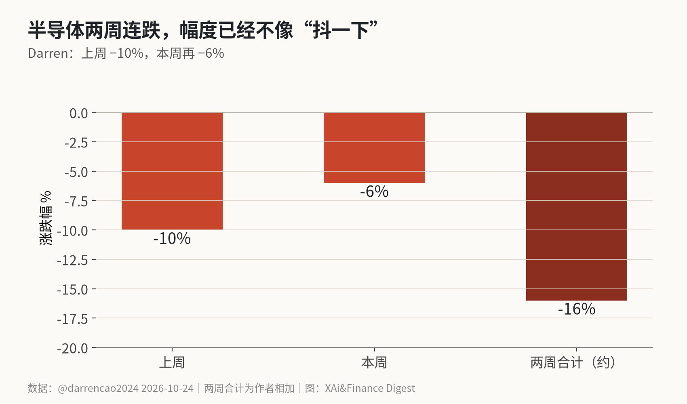
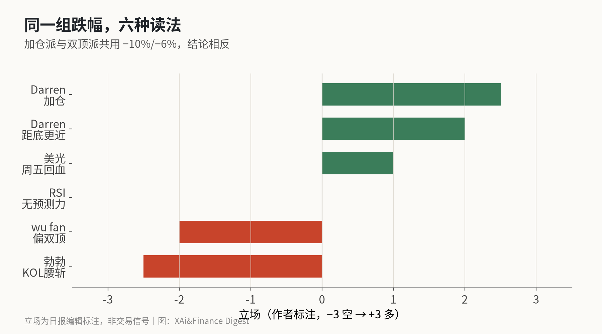

同一张半导体图：有人加仓，有人说这是双顶
Darren 写半导体上周跌 10%、本周再跌 6%，并公开加仓；wu fan 看着回落到 4–5 月的价格，问这是双顶还是筑底。跌幅两边都认，位置判断完全相反。
半导体板块这两周的数字不需要我发明。@darrencao2024 写得很清楚：继上周下跌 10% 后，本周再跌 6%。我把两周相加，大约 16%。对一个高 Beta 板块，这已经不是盘中回撤的量级。
分歧从下一句开始。Darren 说，很多之前高位的半导体股票已经进入合理估值区间，本周加仓了 Lite、Cohr、Nbis、英特尔，并认为英伟达、博通、美光、ASML、台积电也进入有吸引力的价位。@wufantouzi 看着同一段下跌，说 5 月以来 FOMO 买进去的人现在应该都被套，价格回到了 4–5 月，然后问：这到底是双顶，还是下一次起飞的筑底？他自己的答案偏双顶——从周期行业看，to C 收入增速不及预期。
跌了多少
把 −10% 和 −6% 拆开看也有信息。连续两周同向大跌，说明不是单日流动性事件，而是有资金在减仓或对冲。若只是一天 −10% 次日完全收回，更像逼空或期权相关；两周累计约 −16%，更像风险溢价重估。
当然，板块指数和个股不是一回事。Darren 加仓的 Lite、Cohr、Nbis、英特尔，与 NVDA/AVGO/MU/ASML/TSM 的弹性差很多。读“半导体跌了”时，先问跌的是哪一层：设计、设备、存储、代工，还是以 AI 叙事抱团的中小票。勃勃说的腰斩，听起来更像后一类。

−10% 与 −6% 都来自 Darren 同一帖，两周合计 −16% 是我加的。我没有在本文里重算 SOX 或个股的精确收盘涨跌；若你要交易，应以交易所行情为准。帖子的价值在于：一位公开加仓的中文区投资者，愿意用这两个整数描述板块强度。
@MSX_CN 周五早报写芯片股反手回血、美光涨 2.46%。这和“两周大跌”不矛盾——大跌过程里可以有单日反弹。@bboczeng 另发一张图：推特上半导体 KOL 最喜欢的一批票，过去一个月“全军覆没，甚至接近腰斩”。这是观察帖，没有给出逐票代码与精确跌幅，我按“情绪很差”读，不按“每只都 −50%”读。
六种读法
把这六种读法映射到仓位上：极端多头已经在跌势中加仓；温和多头在等财报确认；中性派承认超卖但拒绝用 RSI 做扳机；温和空头认为周期位置不对；极端空头直接宣判 AI 交易结束。我自己的位置靠近“温和多头到中性”之间——承认估值改善，但不把公开加仓帖当行动指令。

把时间线上的声音排开，大致是：
加仓派：估值回到可买区间（Darren）；不确定因素（AI 恐慌、中期选举）最多两周消除，距离底部比顶部近（Darren 另一帖）。中间派：RSI 超卖不能预测反弹，SNDK 曾超买三个月仍继续涨，美股是长尾风险制造机（勃勃）。双顶派：周期 + to C 增速（wu fan）；KOL 票成了退出燃料（勃勃另一帖）；跌一周就抄底偏早（wu fan 自述）。
还有更狠的：勃勃称“所谓 AI 交易已经结束”，中途爆发的公司最后都会归零，并点名 $SIVE 为散户抱团顶部。这是观点，不是已核验的基本面结论。
加仓清单里有什么
Darren 点名的 Lite、Cohr、Nbis、英特尔，和“英伟达、博通、美光、ASML、台积电进入吸引价位”不是同一层。前者是他本周实际加仓；后者是他认为合理、但未必已经买的核心持仓候选。读帖时把这两层分开，能少很多误会。
我没有去核他对每只股票的成本或仓位大小——公开帖也没有给。能核实的只有：他愿意在 −10%/−6% 之后用真金白银表态。这和“全市场应该加仓半导体”是两回事。
双顶派的证据链
wu fan 的链条是：5 月以来 FOMO → 6–7 月最疯 → 现在回到 4–5 月价格 → 周期行业常见双顶 → to C 收入增速不及预期。缺的一环是 to C 的具体数字；帖子里没有贴出手机、PC 或消费电子的一手销售表。所以双顶是框架，不是已经完成的统计检验。
勃勃的“腰斩”帖强化情绪，不强化数据。散户“从相信那天起就成为退出燃料”是修辞。有用的部分是：越是被 KOL 反复安利的标的，越要单独做仓位管理，而不是把板块跌幅直接映射成“已经跌透”。
我自己会盯的三个触发器
一是 Mag7 财报周。Darren 提到下周亚马逊、微软、谷歌一起出报。若指引把 AI 资本开支再往上抬而毛利率语言变软，半导体可能继续被“开支担忧”压；若开支落地伴随更强的云收入，加仓派会更有底气。
二是 to C 数据。双顶派的关键假设在消费电子和终端需求。若接下来几个星期只有股价跌、没有更差的 to C 证据，双顶叙事会显得像价格事后拟合。
三是 SOX 或半导体内部分化。美光周五 +2.46% 这种存储回血，和 GPU 名字股、设备股是否同向，能看出跌的是“整个周期”还是“某条叙事链”。同向大跌支持周期论；明显分化支持叙事拥挤论。
在这三个触发器有新证据之前，我把两周 −16% 记作波动率事件，把加仓记作交易员行为，把双顶记作待验假设。
写给自己的风控备注
两周快速下跌最容易诱发的错误，是把“已经跌了很多”翻译成“风险已经释放”。波动率下来之前，同样的仓位，回撤体验会重复。Darren 选择加仓，是他的风险预算；把公开加仓当成号召，是读者的风险。
同样，双顶派若在下跌中途就大幅做空，也要面对财报周的空头挤压。我更想看到的是：价格和 to C 数据是否同向验证。在那之前，立场可以保留，仓位不宜故事化。
和 AWS sold-out 的张力
同窗口里，Jassy 说 AWS 2026–2028 大块容量售罄/预订。若云需求真那么满，半导体为什么跌？一种解释是股价在交易近端担忧（开支、融资、选举），合同在交易远端容量。另一种解释是 wu fan 的：to C 收入跟不上，周期见顶，sold-out 也救不了股票的估值压缩。
我没办法用今天的公开帖子在这两种解释里一锤定音。能做的是把可证伪的点写清楚：若接下来两周 Mag7 财报后半导体继续创新低，加仓派的“距底更近”要打折；若股价在财报后明显修复而 to C 数据仍弱，双顶派也要解释为什么价格不认周期。
我自己的倾向偏谨慎：两周 −16% 确实改善了估值吸引力，但“加仓清单”和“双顶”可以同时为真——前者是交易员的价格行为，后者是卖方的收入周期。在 to C 增速有更好的一手数据之前，我不会把这次下跌自动翻译成新一轮牛市的起点。
收尾时回到标题：同一张图，两种读法。加仓派读的是价格；双顶派读的是周期。两者都可能对一段时间，但不会永远同时对。我愿意承认自己今天没有足够的 to C 一手数据去做最终裁决——这不是谦虚，是材料边界。
X 上怎么看
结论 · 明显分歧：加仓派与双顶派共用同一组跌幅，结论相反；单票腰斩叙事多为观察、未逐一核价。
▲ 看多3 位
▼ 看空4 位
● 分歧或中性1 位
观点为 X 用户当日公开帖子的中文摘要，忠于原文但有删减；标「未核实」的为预测、个人推测或单一来源说法。立场为人工判断。
数据来源
- https://x.com/darrencao2024/status/2113791068877537338
- https://x.com/darrencao2024/status/2114003622857982144
- https://x.com/wufantouzi/status/2113917927225209333
- https://x.com/wufantouzi/status/2113876070256545917
- https://x.com/bboczeng/status/2113868052752134459
- https://x.com/bboczeng/status/2113883431511978034
- https://x.com/bboczeng/status/2113900701948731776
- https://x.com/MSX_CN/status/2113808661210714170